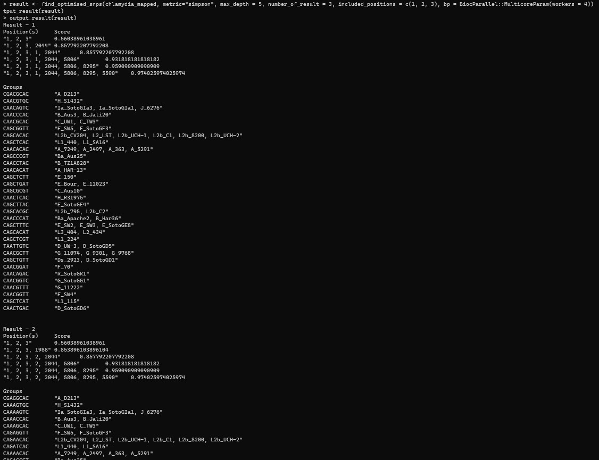

chlamydia_1 <- read_fasta("Chlamydia_1.fasta")
processed_chlamydia_1 <- process_allele(chlamydia_1)
processed_chlamydia_1$ignored_positionMinSNPs User Manual
Introduction
MinSNPs is written in R. The convention is that programs written in this language are termed “packages”.
We suggest two different user interfaces:
- For users who are unfamiliar with the UNIX operating system and/or do not have access to a computer cluster, we suggest running MinSNPs in RStudio. RStudio is designed to facilitate the development and operation of R packages by providing a workspace that is quicker and easier to use than a purely command line interface. Although this will limit the scale and speed of analyses, a typical office PC is powerful enough for many useful applications of MinSNPs. RStusdio Desktop can be accessed at https://www.rstudio.com/products/rstudio/
- For users who are familiar with the UNIX environment, or who can access appropriate support, we suggest operating MinSNPs using a standard command line interface, with a UNIX-based high performance computer cluster. “R base Binary” will need to be installed. Running R in this environment creates an “R Terminal”.
The operations for either interface are very similar. In general, all operations & commands for 2nd UI can be copied and run within the terminal in RStudio, and where RStudio provide additional UI to simplify the user experience, the following sections provide additional screenshots.
Accessing & Installing MinSNPs
MinSNPs is available in the CRAN repository of R packages. The R environment makes it straightforward to load packages directly from CRAN i.e. it is unnecessary to download the code onto a local machine prior to installation.
- In either a R terminal or RStudio, run the command
setRepositories()and make sure that both CRAN and BioC software are selected; can be confirmed withgetOption("repos").
- Run the command
install.packages("minSNPs")or user the provided UI in Rstudio to installMinSNPs, the package will be downloaded from CRAN and installed, ensure that it has been successfully installed.
Using minSNPs
The following sections are demo making use of 3 sample FASTA files:
You can download the files and follow along.
These steps are always needed in any analysis:
Import minSNPs package in R environment with command
library("minSNPs").minSNPs output loaded version when imported successfully Setting the working directory to where the files are with
setwd("<directory>").RStudio provide GUI to set working directory
Reading & Cleaning orthologous SNP matrix in FASTA format
- Use the function
read_fasta("<fasta_file>")to read an orthologous SNP Matrix. - Use the function
process_allele(<read variable>)to preprocess the matrix, see function reference for options.
Reading and processing Chlamydia_1
Code:
What happened?
- We read Chlamydia_1.fasta and assigned it to a variable called
chlamydia_1. - We processed the matrix, and:
- removed 2 sequences,
A_D213andBa_Aus25, this is due to sequence with length different from others. - ignored 2 positions, 22 and 24, this can be due to non-standard character or dash.
- removed 2 sequences,
Reading and processing Chlamydia_2
Code:
chlamydia_2 <- read_fasta("Chlamydia_2.fasta")
processed_chlamydia_2 <- process_allele(chlamydia_2)
processed_chlamydia_2$ignored_positionWhat happened?
- We read Chlamydia_2.fasta and assigned it to a variable called
chlamydia_2. - We processed the matrix, and:
- removed 1 or sequences
A_D213because of the same sequence name. - removed 3 sequences,
A_D213,Ia_SotoGIa3andD_SotoGD1, this is due to sequence with length different from others. - ignored 4 positions, 1, 2, 3, 4, this can be due to non-standard character or dash.
- removed 1 or sequences
Reading and processing Chlamydia_mapped
Code:
chlamydia_mapped <- read_fasta("Chlamydia_mapped.fasta")
processed_chlamydia_mapped <- process_allele(chlamydia_mapped)What happened?
- We read Chlamydia_mapped.fasta and assigned it to a variable called
chlamydia_mapped. - We processed the matrix, but did not find any anomaly.
minSNPs in %-mode
Identify SNPs discriminating a single sequence (A_D213):
Code:
result <- find_optimised_snps(chlamydia_mapped, metric="percent", number_of_result=3, goi="A_D213")
output_result(result)What happened?
- We identified 3 set of SNP that discriminate against
A_D213. - All the 3 SNPs on its own completely discriminate against
A_D213, and the target allele is shown.
Identify SNPs discriminating multiple sequences (A_D213, Ia_SotoGIa3, D_SotoGD1):
Code:
result <- find_optimised_snps(chlamydia_mapped, metric="percent", number_of_result=3, goi=c("A_D213", "Ia_SotoGIa3", "D_SotoGD1"))
output_result(result)What happened?
- We identified 3 sets of SNP that discriminate against
A_D213,Ia_SotoGIa3,D_SotoGD1. - None of the 3 sets completely discriminate against all the sequences, the selected SNPs and how it would group the sequences are shown.
Identify SNPs discriminating multiple sequences (A_D213, Ia_SotoGIa3, D_SotoGD1) II:
Code:
result <- find_optimised_snps(chlamydia_mapped, metric="percent", number_of_result=3, max_depth = 5, goi=c("A_D213", "Ia_SotoGIa3", "D_SotoGD1"))
output_result(result)What happened?
- We identified 3 sets of SNP that discriminate against
A_D213,Ia_SotoGIa3,D_SotoGD1, each set can have up to 5 SNPs. - Set 1 and 3 completely discriminate against all the sequences with (5 and 4 SNPs respectively), while set 2 still fail to completely discriminate against all the 3 isolates; the selected SNPs and how it would group the sequences are shown.
minSNPs in D-mode
Running D-mode analysis as-is:
Code:
result <- find_optimised_snps(chlamydia_mapped, metric="simpson", number_of_result=3, max_depth = 5)
output_result(result)What happened?
- We identified 3 sets of SNP that have the highest Simpson score, each set can have up to 5 SNPs, only terminating if the Simpson is 1.
- The selected SNPs and how the SNPs would group the sequences are shown.
Exclude specific SNPs:
Code:
result <- find_optimised_snps(chlamydia_mapped, metric="simpson", max_depth = 5, excluded_positions = c(1988, 8241))
output_result(result)What happened?
- We identified a set of maximum 5 SNPs that has the highest Simpson score, the set will not include SNPs at 1988, and 8241.
- The selected SNPs and how the SNPs would group the sequences are shown.
Include specific SNPs:
Code:
result <- find_optimised_snps(chlamydia_mapped, metric="simpson", max_depth = 5, included_positions = c(1, 2, 3))
output_result(result)What happened?
- We identified a set of SNPs that has the highest Simpson score, the set will include SNPs at 1, 2, 3, and up to additional 5 SNPs.
- The selected SNPs and how the SNPs would group the sequences are shown.
Save result to TSV
Code:
output_result(result, view = "tsv", file_name = "result.tsv")What happened?
- The result is saved at a file called
result.tsv, which can be opened in excel, with tab as delimiter.
Parallelizing runs
Code:
result <- find_optimised_snps(chlamydia_mapped, metric="simpson", max_depth = 5, number_of_result = 3, included_positions = c(1, 2, 3), bp = BiocParallel::MulticoreParam(workers = 4, ))
output_result(result)
What happened?
- The is similar to analysis before, except that we parallelised with 4 cores, by adding the bp argument.
Others
- Functions documentation can be found at: https://ludwighoon.github.io/minSNPs/reference/index.html
- Cheat sheet for R